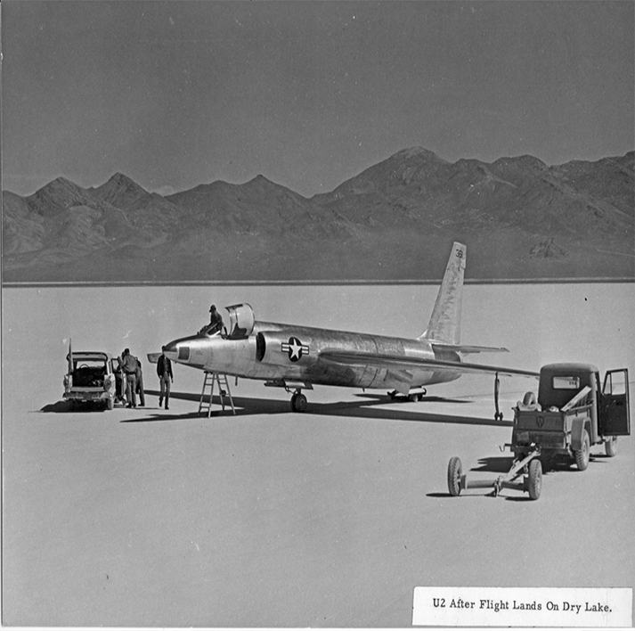

Area 51 Uncensored
The CIA Says...
The CIA has kept quiet about Area 51 and didn't even ackowledge it for decades. On 25 June 2013, following a Freedom of Information Act (FOIA) request filed in 2005, the CIA publicly acknowledged the existence of the base for the first time, declassifying documents detailing the history and purpose of Area 51.
Here are some of the main points the CIA has discussed:
Visit their website to find out more information as well as look into some declassified documents!

Area 51, U-2 and the Accidental Test Flight
On August 1, 1955, during a high-speed-taxi test in the first U-2, Lockheed's chief test pilot, Tony LeVier, inadvertently became airborne at a remote test site in the desert of western Nevada called the Nevada Test and Training Range at Groom Lake. You may know it as Area 51.
LeVier who had conducted the first taxi-test a few days prior, accelerated the U-2 to 70 knots when he suddenly realized he was airborne, leaving him in "utter amazement."
"I had no intentions whatsoever of flying," recalled LeVier in transcripts quoted in "The CIA and Overhead Reconnaissance – the U-2 and OXCART Program, 1954-1974 (PDF 16.56MB)" written by CIA Historians. "I immediately started back toward the ground, but had difficulty determining my height because the lakebed had no markings to judge distance or height. I made contact with the ground in a left bank of approximately 10 degrees."
He was unable to land the U-2 on his first attempt, and it bounced back into the air, but he managed to successfully bring it down on a second try. Damage to the prototype U-2 was very minor. This test would later be considered the first unofficial flight of the U-2.
LeVier piloted the U-2’s first official test flight a few days later on August 4th, and the first official flight with visiting dignitaries present was on August 8th.

Why Area 51?
Much of the testing took place at the facility at Groom Lake, a dry lakebed near Las Vegas, Nevada, in an isolated area that came to be known as Area 51 and Watertown. The area was chosen by top officials of the U-2’s Development Projects Staff who flew to Nevada in search of a site where the U-2 could be tested safely and secretly.
They spotted what appeared to be an airstrip by a salt flat – Groom Lake – near the northeast corner of the Atomic Energy Commission’s (AEC) Nevada Proving Ground, which had been used during World War II as an aerial gunnery range for Army pilots. The site was perfect for testing the U-2 and training its pilots; however, upon further discovery, the U-2 Project Staff learned Groom Lake was not actually part of the AEC proving ground. They asked the AEC to add the Groom Lake strip to its real estate holdings in Nevada, to which the AEC readily agreed, and the deal was approved by President Eisenhower.
How Area 51 got its various names:
The strip of wasteland was known at the time by its map designation: Area 51. To make the new facility sound more attractive to the pilots and workers who would reside there, Lockheed’s famous aeronautical engineer, Clarence "Kelly" Johnson, called it "Paradise Ranch," which was soon shortened to just "the Ranch." Many of the workers even referred to themselves as "ranch hands."
Area 51 is also known by the nickname "Watertown," which was rumored to have been inspired by the name of CIA Director Allen Dulles’s birthplace of Watertown, New York. Records show that the name was a reference to when rainwater would runoff the nearby mountains and flood the dry lakebed of Groom Lake. Whenever the lakebed flooded, project managers would refer to the facility as "Watertown Strip."
The name "Dreamland" was also commonly associated with the Groom Lake facility. According to Thornton D. (TD) Barnes, president of Roadrunners Internationale, an association of former Air Force, CIA, and contract personnel serving at Area 51 during the Cold War, Dreamland was a radio call sign for the base, introduced in the late 1960s. It replaced the previous name, Yuletide, and referred specifically to the large block of airspace (called a Special Operations Area) surrounding Area 51 and parts of the Nevada Test Site and Nellis Air Force Range (now known as the Nevada Test and Training Range).
Although the commonly preferred official name for the facility today is the Nevada Test and Training Range at Groom Lake, both the names Watertown and Area 51 were used as official names for the facility. According to Barnes, Area 51 may be found on official Nevada Test Site (NTS) maps and other documentation, while some Department of Energy documents indicate that Watertown is legally listed as a member of Alamo Township in Lincoln County, Nevada.
How do you get a super-secret aircraft to a super-secret facility?
For security reasons, primary access to Area 51 was by aircraft. A C-124 would transport the components of a U-2, which were constructed in Burbank, California, then disassembled and transported to Watertown for reassembly and testing. A daily air shuttle also transported personnel and other cargo between Watertown and the "Skunk Works," the Lockheed production facility in Burbank.

The U-2, however, wasn’t the only Agency aircraft transported, tested, and flown out of Area 51. The first flight test of the CIA’s A-12 OXCART took place at the Groom Lake facility on April 25, 1962; the remaining operational aircraft arrived for flight tests through mid-1964. By the fall of 1965, the eleven pilots selected to fly A-12 missions and their aircraft were ready for deployment.
The legacy and sacrifice of those who worked at Area 51:
CIA, Air Force, and private industry personnel from many specialties helped make the U-2 a reality and several lost their lives in the process. Four of those were pilots who had known the risks of handling an aircraft that was difficult to fly, even in the best of circumstances. Fourteen members involved in the U-2 project also lost their lives when their transport plane en route from Burbank to Watertown crashed during bad weather into Mount Charleston, a few miles outside of Las Vegas.
The sacrifice these pilots and U-2 project personnel made for their country helped the US win the Cold War. Along with thousands of Americans who worked at Area 51, their patriotism, ingenuity, and willingness to take on a project critics believed was impossible at the time – the creation of the U-2—allowed the US to penetrate the Iron Curtain and gain an unparalleled advantage over the Soviets in intelligence gathering.